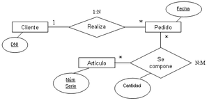

Bloque III. Desarrollo de sistemas - La web de emijrp
| Oposiciones | |
|---|---|
| Apuntes | Bloque I · Bloque II · Bloque III · Bloque IV |
El Bloque III. Desarrollo de sistemas de las Oposiciones a TAI 2017 se compone de 10 temas.
| Tabla de contenidos |
|---|
|
1. Tema 1: Modelo conceptual de datos 1.1 Modelo conceptual de datos 1.2 Diagramas de flujo de datos 2. Tema 2: Diseño de bases de datos 2.1 Diseño lógico y físico 2.2 Normalización 2.3 12 reglas de Codd 3. Tema 3: Lenguajes de programación 3.1 Paradigmas 3.2 Estructuras 3.3 Lenguajes 4. Tema 4: Lenguajes de interrogación de bases de datos 4.1 ANSI SQL 4.2 Procedimientos almacenados 4.3 Eventos y disparadores 5. Tema 5: Diseño y programación orientada a objetos 5.1 UML 5.2 Patrones de diseño 6. Tema 6: Arquitectura Java EE y plataforma .NET 6.1 Java 6.2 C 6.3 C++ 6.4 .NET 7. Tema 7: Arquitectura de sistemas cliente/servidor 8. Tema 8: Aplicaciones web 8.1 HTML 8.2 Javascript 8.3 PHP 9. Tema 9: Accesibilidad y usabilidad 10. Tema 10: Herramientas CASE 10.1 Control de versiones 10.2 Plataformas de desarrollo colaborativo de software 11. Fuentes 12. Referencias |
Tema 1: Modelo conceptual de datos
Modelo conceptual de datos. Entidades, atributos y relaciones. Reglas de modelización. Diagramas de flujo de datos. Reglas de construcción. Descomposición en niveles. Flujogramas.
Modelo conceptual de datos
|  |
| Diagrama ER. |
{kind=link}
El modelo entidad-relación ideado por Peter Chen en 1976 es el más frecuente para el diseño conceptual de bases de datos.
Los elementos básicos de un diagrama entidad-relación son las entidades, las relaciones y los atributos. Las entidades cuentan con atributos y ellas se relacionan entre sí.
- Entidad: representan objetos del mundo real independientes entre sí. Cuentan con atributos (propiedades). Se representan con rectángulos con el nombre de la entidad dentro. Ejemplos: una persona, una ciudad, un coche.
- Atributos: son las propiedades o particularidades de una entidad. Se representan con círculos con el nombre del atributo dentro. Los valores posibles vienen determinados por el dominio (caracteres, números, etc). Ejemplos: Una persona puede tener de atributos su nombre, fecha de nacimiento, DNI, etc. Los atributos identificativos son aquellos que diferencian claramente a un objeto de otro, por ejemplo para personas se suele usar el DNI.
- Relación: describe la dependencia entre entidades y cómo se asocian entre ellas. Se representan con rombos con el nombre de la relación dentro. Si la relación es entre dos tipos de entidades, se llama binaria o de grado dos. El número de instancias de cada entidad que intervienen en la relación es la cardinalidad. Ejemplo: una entidad persona se relaciona con una entidad ciudad a través de la relación Persona - "nacido en N:1" - Ciudad. Como una persona solo puede nacer en 1 ciudad, la relación es N:1, ya que en una ciudad pueden nacer N personas. La cardinalidad puede ser 1:1 (uno a uno), 1:N (uno a varios), N:1 (varios a uno), N:M (varios varios). Las relaciones también pueden tener atributos como las entidades, un caso frecuente son aquellas relaciones con fecha u hora.
- Dependencia por existencia: los ejemplares de entidades débiles no pueden existir sin el ejemplar de entidad fuerte.
- Dependencia por identificación: los ejemplares de entidades débiles se identifican con atributos propios y el identificador de la entidad de la que dependen. Toda dependencia por identificación es una dependencia por existencia.
Diagramas de flujo de datos
{kind=link}
Un Diagrama de Flujo de Datos (DFD) es una representación gráfica del flujo de datos y los cambios que sufre en un sistema de información, desde que entra al sistema hasta que sale. Existen distintos niveles de abstracción y detalle.
Componentes de los DFD:
- Procesos: son las funciones que realizan operaciones sobre los datos, teniendo unas entradas y unas salidas.
- Almacenes: información almacenada en un punto del sistema en algún momento.
- Agentes externos: las entidades que interactúan con el sistema.
- Flujo de datos: camino que siguen los datos entre dos partes del sistema. El sentido de la flecha indica cómo se mueven los datos. Los procesos pueden conectarse con otros procesos, almacenes y agentes externos. Los almacenes y agentes externos solo con procesos.
Los flujos de datos entre procesos y almacenes son: Proceso <- Almacén (flujo de consulta), Proceso -> Almacén (flujo de actualización), Proceso <-> Almacén (flujo de diálogo).
Los niveles de un DFD son:
Pregunta relacionada en convocatoria 2016
- Nivel 0: Diagrama de contexto. Solo incluye un proceso que engloba al sistema completo. Se indican los flujos de datos entre el sistema y los agentes externos. No se indican otros procesos ni almacenes. Es el nivel más abstracto.
- Nivel 1: Diagrama de nivel superior. Se indican todos los procesos que describen al proceso principal. Aquí los procesos no suelen relacionarse entre ellos, sino entre almacenamientos y agentes externos.
- Nivel 2: Diagrama de detalle o expansión. Se admiten relaciones entre procesos. El detalle es mayor.
Tema 2: Diseño de bases de datos
Diseño de bases de datos. Diseño lógico y físico. El modelo lógico relacional. Normalización.
Pregunta relacionada en convocatoria 2016
- Regla de integridad de entidad: los atributos de la clave primaria no pueden ser nulos.
- Regla de integridad referencial: los atributos de las claves foráneas deben existir en la clave primaria o ser nulos.
- Regla de integridad de dominio: los valores no nulos de un atributo deben pertenecer al dominio del atributo.
Diseño lógico y físico
Normalización
Si una base de datos no está normalizada se pueden producir inconsistencias en los datos además de redundancias.
12 reglas de Codd
Pregunta relacionada en convocatoria 2016
En realidad son 13 reglas propuestas por Edgar Codd que se deben cumplir para el modelo relacional de bases de datos.
- Regla 0: un sistema relacional debe gestionar sus bases de datos mediante capacidades relacionales.
- Regla 1: toda la información se representa unidireccionalmente, con valores en columnas dentro de filas de tablas.
- Regla 2: todos los datos se deben poder acceder sin ambiguëdad. Acceso garantizado.
- Regla 3: debe permitir la existencia de valores nulos.
- Regla 4: ofrecer acceso a la estructura de la base de datos.
- Regla 5: el sistema debe soportar un lenguaje relacional con sintaxis lineal, interactivo y que soporte definicón de datos.
- Regla 6: todas las vistas teóricamente actualizables deben poderse actualizar.
- Regla 7: alto nivel de inserción, actualizació y borrado. Operaciones sobre múltiples filas.
- Regla 8: independencia física de los datos.
- Regla 9: independencia lógica de los datos.
- Regla 10: independencia de la integridad.
- Regla 11: independencia de la distribución.
- Regla 12: regla del orden, no se debe poder trabajar a bajo nivel sin que haya seguridad relacional e integridad.
Tema 3: Lenguajes de programación
Lenguajes de programación. Representación de tipos de datos. Operadores. Instrucciones condicionales. Bucles y recursividad. Procedimientos, funciones y parámetros. Vectores y registros. Estructura de un programa.
Paradigmas
Los paradigmas de programación son formas de clasificar los lenguajes de programación en base a las características de su estructura, control de flujo y elementos. Un mismo lenguaje puede pertenecer a varios paradigmas.
- Imperativo: es el más extendido. Consiste en dar instrucciones al ordenador, en forma de algoritmos, sobre cómo hacer las cosas. Ejemplos: lenguaje máquina, C, BASIC, Pascal.
- Orientado a objetos: basado en el imperativo pero encapsula variables y funciones en entidades llamadas objetos. Ejemplos: C++, C#, Java, Python, Smalltalk.
- Procedural: agrupa el código en funciones. Ejemplos: Fortran, ALGOL, COBOL, BASIC, C.
- Declarativo: describen la lógica pero sin expresar el control de flujo. Ejemplos: Lisp, Haskell, ML, Prolog, Curry.
- Funcional: se basa en el uso de funciones matemáticas en vez de en la mutación de variables (imperativa). Ejemplos: Haskell, Erlang.
- Lógico: basado en la lógica formal, expresando hechos y reglas sobre el dominio del problema a resolver. Ejemplos: Prolog, Datalog.
- Algebraicos: Ejemplos: Maude, SQL.
- Simbólico: permite manipular sus propias fórmulas y componentes como si fueran datos. Ejemplos: Wolfram, Lisp, Prolog.
- Concurrente:
- Distribuida:
- Paralela:
Estructuras
Una instrucción condicional es aquella que tras ser evaluada determina qué fragmento de código se ejecutará. Puede ser un if simple (solo un caso, la evaluación afirmativa), un if-else (con código tanto para la evaluación afirmativa como negativa de la condición) o un switch/select-case (múltiples casos).
Un bucle es una sentencia que ejecuta repetidas veces un trozo de código, hasta que la condición asignada a dicho bucle deja de cumplirse. Los tres bucles más utilizados en programación son el bucle while, el bucle for y el bucle do-while.
Un algoritmo recursivo es un algoritmo que expresa la solución de un problema en términos de una llamada a sí mismo. La llamada a sí mismo se conoce como llamada recursiva o recurrente.
Un procedimiento es una subrutina dentro de un programa que resuelve una tarea específica. Una función es aquella subrutina que devuelve un valor. Los parámetros son aquellas variables que se le pasan a los procedimientos o funciones para que sean utilizados en la resolución de la tarea.
Lenguajes
Algunos lenguajes de programación y una breve reseña sobre ellos. Algunos no son estrictamente lenguajes de programación (como HTML, CSS, XML) pero se incluyen por ser de interés:
- Ada 95: lenguaje orientado a objetos y fuertemente tipado.
- ALGOL: familia de lenguajes imperativos cuya primera versión ALGOL 58 apareció en 1958. Fue el que más influyó a lenguajes posteriores en cuanto a sintaxis de entre sus contemporáneos de alto nivel (FORTRAN, Lisp y COBOL).
- AWK: lenguaje para procesado de texto y extracción de datos. Creado en Bell Labs en los años 70.
- Batch: un script batch es un fichero en texto plano que incluye comandos para ser ejecutados por el intérprete de comandos. Su extensión suele ser .bat, .cmd o .btm.
- Bash: escrito por Brian Fox para el Proyecto GNU. Primera versión en 1989.
- BASIC: familia de lenguajes de alto nivel y de propósito general con la finalidad de ser fáciles de usar. Primera versión en 1964.
- C: lenguaje imperativo de propósito general, estructurado y con capacidad de recursión, de tipado estático. Desarrollado por Dennis Ritchie en los Laboratorios Bell entre 1969 y 1972. Proviene del lenguaje B.
- C++: imperativo, orientado a objetos, de propósito general. Creado por Bjarne Stroustrup en 1985.
- C#: lenguaje multiparadigma, desarrollado por Microsoft en 2000.
- COBOL: lenguaje imperativo y procedural. Enfocado a finanzas y negocios. Creado en 1959.
- CSS: lenguaje de hojas de estilo para describir cómo se presenta un documento escrito en un lenguaje de marcado. Aunque en su mayoría se utiliza para el diseño de páginas web HTML/XHTML, también sirve para documentos XML, SVG y XUL.
- Eiffel: lenguaje orientado a objetos, diseñado por Bertrand Meyer, publicado en 1986. Conceptos introducidos por Eiffel fueron incorporados más tarde a Java y C#.
- Erlang: lenguaje de propósito general concurrente y funcional, con recolector de basura. Diseñado en 1986 por Ericsson, liberado en 1998.
- Ensamblador: lenguaje de bajo nivel, imperativo, no estructurado. Específico de cada arquitectura de computador. El código ensamblador se convierte en ejecutable con un programa llamado a su vez ensamblador.
- FORTRAN: lenguaje de propósito general, imperativo, enfocado a computación numérica y científica. Desarrollado originalmente por IBM en los años 50. Significa Formula Translation.
- Go: lenguaje imperativo, concurrente, compilado, creado por Google en 2009.
- Haskell: lenguaje de propósito general, funcional, con tipado fuerte.
- HTML: lenguaje de marcado para crear páginas web y aplicaciones web. Junto con CSS y Javascript suponen los tres lenguajes básicos de la World Wide Web. Los navegadores web reciben los documentos HTML desde un servidor web o almacenados localmente y los renderizan. El HTML permite embeber programas escritos en Javascript o a través de applets.
- Java: lenguaje de propósito general, concurrente, orientado a objetos, diseñado para ser compilado una sola vez (bytecode) y ejecutado en cualquier plataforma que soporte la máquina Java. Empleado mayoritariamente para aplicaciones cliente-servidor. Creado por James Gosling en 1995 en Sun Microsystems (luego adquirida por Oracle). Sintaxis derivada de C y C++.
- JavaScript: lenguaje de alto nivel, interpretado, multiparadigma, de tipado débil. Se utiliza para hacer dinámicas las páginas web, aunque ahora también se utiliza para aplicaciones de escritorio, en software PDF, procesadores de texto, etc.
- KML: Keyhole Markup Language, notación XML para expresar información geográfica para ser visualizada en mapas y 3D en navegadores.
- LaTeX: lenguaje de marcado para la redacción de documentos. Creado en 1985 por Leslie Lamport. Permite definir la estructura del documento, el estilo del texto, añadir citas y referencias, etc.
- Lisp: lenguaje funcional, procedural, creado en 1958. Es el segundo lenguaje de alto nivel más antiguo, por detrás de FORTRAN. Existen varios dialectos, entre ellos Common Lisp y Scheme. Utilizado en inteligencia artificial.
- Lua: imperativo, estructurado y bastante ligero que fue diseñado como un lenguaje interpretado con una semántica extendible.
- make: lenguaje para compilar y enlazar código fuente, generando código objeto.
- Modula: descendiente de Pascal, creado por el autor de éste. Soporta módulos.
- Occam: lenguaje concurrente, imperativo.
- Pascal: lenguaje imperativo y procedural, diseñado por Niklaus Wirth y publicado en 1970. Creado para fomentar buenas prácticas de programación mediante el uso de programación estructurada y estructuras de datos. Existe el Object Pascal orientado a objetos.
- Perl: lenguaje de alto nivel, propósito general, interpretado.
- PHP: lenguaje del lado del servidor para desarrollo web y propósito general. Creado por Rasmus Lerdof en 1994. Puede embeberse dentro del HTML.
- Prolog: lenguaje lógico de propósito general, enfocado a la inteligencia artificial y lingüística computacional. Creado en los años 70 por Alain Colmerauer.
- Python: lenguaje interpretado, multiparadigma, de alto nivel y propósito general. Creado por Guido van Rossum en 1990. Con tipos dinámicos y control de memoria automático.
- R: lenguaje para estadística y gráficas. Creado en 1993.
- Ruby: lenguaje orientado a objetos, de propósito general, multiparadigma. Creado por Yukihiro Matsumoto en 1995.
- Scala: lenguaje de propósito general, funcional, diseñado para corregir algunas críticas de Java. Creado en 2004 por Martin Odersky.
- Smalltalk: lenguaje orientado a objetos, creado en parte con fines educativos por programadores de Xrox PARC en los años 70.
- Simula: lenguaje orientado a objetos creado en 1962. El primero en incluir el concepto de clase.
- SVG: Scalable Vector Graphics es un formato gráfico basado en XML con soporte para animación.
- Vala: lenguaje multiparadigma, orientado a objetos. Creado en 2006.
- Visual Basic: lenguaje dirigido por eventos, publicado en 1991 por Microsoft. Derivado de BASIC, permite crear aplicaciones con interfaz gráfica rápidamente.
- Visual Basic .NET: lenguaje orientado a objetos, multiparadigma, lanzado en 2002 por Microsoft. Sucesor de Visual Basic.
- XML: Extensible Markup Language, lenguaje de marcado para definir reglas para codificar documentos en un formato que sea entendible por humanos y máquinas.
- XUL: XML User Interface Language es un lenguage de marcas para interfaces de usuario desarrollado por Mozilla. Permite crear interfaces gráficas de usuario de forma similar a una página web.
Tema 4: Lenguajes de interrogación de bases de datos
Lenguajes de interrogación de bases de datos. Estándar ANSI SQL. Procedimientos almacenados. Eventos y disparadores.
Pregunta relacionada en convocatoria 2016
Las transacciones de un sistema de gestión de bases de datos deben cumplir la regla ACID:
- Atomicidad: cuando una operación se compone de varios pasos, se ejecutarán todos o ninguno.
- Consistencia: solo se empieza aquello que se va a acabar.
- Aislamiento (Isolation): una operación no afecta a otras.
- Durabilidad: una vez realizada la operación, no será deshecha ni ante un error del sistema.
ANSI SQL
SQL (Structured Query Language o Lenguaje de Consulta Estructurada) es un lenguaje estandarizado con el que acceder a un sistema de gestión de bases de datos relaciones y realizar operaciones.
SQL consiste en un lenguaje de definición de datos, un lenguaje de manipulación de datos y un lenguaje de control de datos.
- Lenguaje de definición de datos (DDL): son las órdenes que permiten crear, modificar y eliminar las tablas, vistas, procedimientos, triggers y hasta las propias bases de datos.
- CREATE: permite crear bases de datos, tablas, vistas y procedimientos. Ejemplo: CREATE TABLE 'CLIENTES';
- ALTER: permite modificar una tabla, quitando o agregando campos, cambio de tipos, índices, triggers. Ejemplo: ALTER TABLE 'CLIENTES' ADD EDAD INT UNSIGNED;
- DROP: permite eliminar un objeto. Ejemplo: DROP TABLE 'CLIENTES';
- TRUNCATE: vacía todo el contenido de una tabla. Ejemplo: TRUNCATE TABLE 'ALUMNOS';
- Lenguaje de manipulación de datos (DML): son las órdenes que permite consulta y modificar los datos de la base de datos.
- SELECT: permite consultar los datos, y junto con otras cláusulas filtrar estos resultados, ordenarlos, etc.
- ALL/DISTINCT: selección todos los valores o solo los distintos.
- FROM: determina la tabla a explorar. Pueden ser varias usando JOIN (requiere entonces usar WHERE).
- WHERE: indica las condiciones que deben cumplirse para que los datos sean devueltos. Pueden ser varias condiciones, combinadas con AND y OR.
- GROUP BY: indica el campo sobre el que se agruparán los datos.
- HAVING: condición que se aplicará a los datos devueltos, requiere GROUP BY.
- ORDER BY: ordena los resultados usando las columnas indicadas. El orden puede ser ASC o DESC. El predeterminado es ASC. Si hay varios atributos en el ORDER BY, cada uno puede llevar su ASC o DESC.
- Ejemplo para recuperar todos los clientes de Madrid: SELECT nombre, dni, lugar FROM clientes WHERE lugar='Madrid' ORDER BY nombre;
- INSERT: inserta un registro o varios en una tabla. El número de columnas y de valores indicados debe ser igual. Si una columna no se indica le será asignado el valor por defecto. Ejemplo: INSERT INTO 'cliente' ('nombre', 'dni', 'lugar') VALUES ('Pepe', '12345678A', 'Segovia');
- Si se indican todos los valores no haría falta poner los nombres de las columnas. Para el ejemplo anterior suponiendo que la tabla solo tenga esos tres campos, sería: INSERT INTO 'cliente' VALUES ('Pepe', '12345678A', 'Segovia');
- Para insertar varios registros a la vez en la misma consulta INSERT, sería separándolos con comas: INSERT INTO 'cliente' VALUES ('Pepe', '12345678A', 'Segovia'), ('Maria', '87654321Z', 'Barcelona');
- UPDATE: permite modificar los valores de una tabla. Ejemplo para modificar el lugar de Pepe: UPDATE clientes SET lugar='Madrid' WHERE nombre='Pepe';
- DELETE: elimina un registro o varios. No confundir con DROP que elimina la tabla entera. Ejemplo: DELETE FROM clientes WHERE dni='12345678A';
- Lenguaje de control de datos (DCL): permite controlar el acceso a los datos.
- GRANT: concede permisos a uno o varios usuarios para realizar ciertas tareas (CONNECT, SELECT, INSERT, UPDATE, DELETE, USAGE).
- REVOKE: elimina permisos concedidos con GRANT.
Cláusula JOIN:
- LEFT JOIN:
- RIGHT JOIN:
- FULL JOIN:
Procedimientos almacenados
Los procedimientos almacenados son programas guardados dentro de la base de datos y que son accesibles para las aplicaciones que la consultan. Su utilidad puede ser para validar datos, controlar el acceso, etc. La ventaja es que se ejecutan en el motor de la base de datos y solo devuelven los resultados solicitados, siendo más rápido todo el proceso.
Eventos y disparadores
Los eventos o disparadores (triggers) son objetos que se ejecutan cuando se realiza una operación de INSERT, DELETE o UPDATE sobre una tabla de una base de datos. Esto mejoran el mantenimiento de la base de datos ya que no requiere de intervención humana, reduciendo los errores.
Los triggers se componen de:
- Llamada de activación: la sentencia que activa el trigger.
- Restricción: la condición que ha de cumplirse para que se ejecute el código asociado al trigger.
- Acción a ejecutar: el código en sí que se ejecuta al cumplirse la restricción o condición.
Tema 5: Diseño y programación orientada a objetos
Diseño y programación orientada a objetos. Elementos y componentes software: objetos, clases, herencia, métodos, sobrecarga. Ventajas e inconvenientes. Patrones de diseño y lenguaje de modelado unificado (UML).
La programación orientada a objetos es un paradigma de la programación basado en el concepto de objetos, que pueden contener datos en forma de atributos, y código en forma de métodos.
Una característica de los objetos es que los métodos pueden acceder a sus datos y modificarlos (this/self). En el software orientado a objetos, los objetos interactúan entre ellos.
Los lenguajes orientados a objetos más populares están basados en clases, siendo los objetos instancias de estas clases. Lenguajes orientados a objetos son Java, C++, C#, Python, PHP, Ruby, Perl, Object Pascal, Objective-C, Dart, Swift, Scala, Common Lips y Smalltalk.
Algunos conceptos fundamentales de la POO:
- Clase: es la definición y abstracción de las características comunes de un conjunto de objetos.
- Objeto: instancia de una clase, se corresponde con un objeto del mundo real habitualmente. Contiene atributos y métodos.
- Atributo: propiedad o dato asociado a un objeto.
- Método: procedimiento asociado a un objeto.
Características de la POO:
- Abstracción: expresa las características básicas de un objeto, lo que le diferencia de otros, permitiendo crear una clase con esas características compartidas.
- Herencia: permite crear clases reutilizando otras preexistentes. La subclase obtiene el comportamiento (métodos) y atributos de la superclase. La superclase es más general y la subclase más específica. Por ejemplo una clase perro puede heredar de una superclase mamífero.
- Herencia simple: una subclase hereda de una única superclase.
- Herencia múltiple: una subclase hereda de varias superclases. Java admite herencia simple y polimorfismo, no admite herencia múltiple para evitar ambigüedades. C++ sí soporta herencia múltiple, igualmente que Python, Eiffel y Perl.
- Sobrecarga: permite nombrar con el mismo identificador a más de una variable o método que realizan operaciones distintas. Por ejemplo una función podría llamarse igual, pero en un caso aceptar distintos parámetros y en otro caso no requerir ninguno.
- Polimorfismo: permite enviar mensajes sintacticamente iguales a objetos de clases distintas y ser comprendidos por estos.
- Encapsulamiento: oculta el estado interno de un objeto, de modo que sus atributos solo pueden accederse (leerse o modificarse) a través de los métodos proporcionados por la clase.
- Acoplamiento: es la interdependencia entre clases. Una clase hija depende y accede a las características de la clase padre, pero no al contrario.
- Recolección de basura: consiste en la liberación automática de zonas de memoria que contienen objetos que ya no se usan.
Ventajas e inconvenientes de la POO:
UML
El Lenguaje Unificado de Modelado (UML) es un lenguaje de propósito general en el campo de la ingeniería del software, para proveer de un modo estándar de visualizar el diseño de sistemas. Fue creado en los años 1990.
- Diagramas:
- Estructurales: muestran la estructura estática de los objetos del sistema.
- De clases: es el más usado, fundamental para cualquier solución orientada a objetos. Contiene las clases, atributos y operaciones y relaciones entre clases.
- De componentes: muestran la relación estructural entre componentes de un sistema. Los componentes se comunican a través de interfaces, y estos se enlazan mediante conectores.
- De despliegue: muestra el hardware del sistema y el software de ese hardware.
- De objetos: similares a los diagramas de clases. Indican las relaciones entre objetos.
- De paquetes: indican las dependencias entre paquetes de un sistema.
- De perfiles:
- Estructura compuesta: muestran la estructura interna de una clase.
- Comportamiento: muestran el comportamiento dinámico de los objetos del sistema.
- De actividades: muestran los flujos de trabajo.
- De casos de uso: ofrecen una visión general de los actores del sistema, sus funciones y como interactúan.
- De máquinas de estados:
- Interacción:
- Global de interacciones:
- De comunicación:
- De secuencia: muestran las interacciones entre objetos y el orden en que se producen.
- De tiempos: muestran el comportamiento de los objetos en un tiempo dado.
- Mecanismos de extensibilidad:
- Estereotipo: extiende el vocabulario UML.
- Restricciones: extiende la semántica.
- Valores etiquetados: extiende las propiedades de un estereotipo permitiendo añadir más información.
Patrones de diseño
Pregunta relacionada en convocatoria 2016
Los patrones de diseño son técnicas para resolver problemas típicos durante el desarrollo de software.
- Creacionales: solucionan problemas de creación de instancias.
- Builder: abstrae el proceso de creación de un objeto complejo, centralizando dicho proceso en un único punto.
- Estructurales: solucionan problemas de composición (agregación) de clases y objetos:
- Adaptador: transforma una interfaz en otra, de tal modo que una clase que no pueda utilizar la primera haga uso de ella a través de la segunda.
- Bridge: separa una abstracción de su implementación para que ambas puedan ser modificadas por separado sin alterar la otra.
- Composite: construye objetos complejos a partir de otros más simples, a través de la composición recursiva y a una estructura en forma de árbol.
- Fachada: reduce la complejidad con la división en subsistemas, minimizando las comunicaciones y dependencias entre ellos.
- Proxy: patrón estructural que proporciona un intermediario de un objeto para controlar su acceso.
- Comportamiento: ofrecen soluciones respecto a la interacción y responsabilidades entre clases y objetos, así como los algoritmos que encapsulan.
- Command: permite solicitar una operación a un objeto sin conocer el contenido de la operación ni el receptor de la misma.
- Intérprete: dado un lenguaje, define una gramática para dicho lenguaje, así como las herramientas necesarias para interpretarlo.
- Iterator: permite realizar recorridos sobre objetos compuestos independientemente de la implementación de estos.
- Memento: permite volver a estados anteriores del sistema.
Tema 6: Arquitectura Java EE y plataforma .NET
Arquitectura Java EE y plataforma .NET: componentes, persistencia y seguridad. Características, elementos y funciones en entornos Java, C, C++ y .Net.
Java
Intro, breve historia, caracteristicas del lencuaje, hello world, variables, operadores, estructuras de control, funciones, excepciones, entrada y salida, interfaz gráfica
Palabras reservadas en JAVA:
- true, false, null
- abstract
- assert
- boolean
- break
- byte
- case
- catch
- char
- class
- const (sin uso)
- continue
- default
- do
- double
- else
- enum
- extends
- final
- finally
- float
- for
- goto (sin uso)
- if
- implements
- import
- instanceof
- int
- interface
- long
- native
- new
- package
- private
- protected
- public
- return
- short
- static
- strictfp
- super
- switch
- synchronized
- this
- throw
- throws
- transient
- try
- void
- volatile
- while
Pregunta relacionada en convocatoria 2016
Las API Java son interfaces de programación de aplicaciones, proporcionan clases útiles para el desarrollo de programas. Pueden ser oficiales (paquetes java.*) o no.
- AWT: Abstract Window Toolkit, kit de herramientas para interfaces gráficas. Ahora forma parte de Java Foundation Classes (JFC).
- JavaFX: para la creación de aplicaciones web con capacidades de aplicaciones de escritorio.
- JAX-RPC: servicios web preservando descripción WSDL. Renombrado a JAX-WS.
- JAX-RS: creación de servicios web REST.
- JAX-WS: creación de servicios web en XML.
- Swing: biblioteca gráfica con widgets como cajas de texto, botones, listas, tablas, etc.
- SWT: biblioteca gráfica creada por Eclipse.
C
Intro, breve historia, caracteristicas del lencuaje, hello world, variables, operadores, estructuras de control, funciones, excepciones, entrada y salida, interfaz gráfica
Palabras reservadas en C:
- auto
- break
- case
- char
- const
- continue
- default
- do
- double
- else
- enum
- extern
- float
- for
- goto
- if
- int
- long
- register
- return
- short
- signed
- sizeof
- static
- struct
- switch
- typedef
- union
- unsigned
- void
- volatile
- while
Pregunta relacionada en convocatoria 2016
Secuencias de escape en C:
- \a: sonido alerta beep
- \b: backspace, retroceso
- \f: salto de página
- \n: salto de línea
- \r: retorno de carro
- \t: tabulador horizontal
- \v: tabulador vertical
- \\: barra invertida
- \': comilla simple
- \": comilla doble
- \?: interrogación
C++
Intro, breve historia, caracteristicas del lencuaje, hello world, variables, operadores, estructuras de control, funciones, excepciones, entrada y salida, interfaz gráfica
Palabras reservadas en C++:
- asm
- auto
- bool
- break
- case
- catch
- char
- class
- const
- const_cast
- continue
- default
- delete
- do
- double
- dynamic_cast
- else
- enum
- explicit
- extern
- false
- float
- for
- friend
- goto
- if
- inline
- int
- long
- mutable
- namespace
- new
- operator
- private
- protected
- public
- register
- reinterpret_cast
- return
- short
- signed
- sizeof
- static
- static_cast
- struct
- switch
- template
- this
- throw
- true
- try
- typedef
- typeid
- typename
- union
- unsigned
- using
- virtual
- void
- volatile
- while
.NET
Intro, breve historia, caracteristicas del lencuaje, hello world, variables, operadores, estructuras de control, funciones, excepciones, entrada y salida, interfaz gráfica
Palabras reservadas en .NET:
Tema 7: Arquitectura de sistemas cliente/servidor
Arquitectura de sistemas cliente/servidor y multicapas: componentes y operación. Arquitecturas de servicios web y protocolos asociados.
Tema 8: Aplicaciones web
Aplicaciones web. Desarrollo web front-end y en servidor. Lenguajes: HTML, XML y sus derivaciones. Navegadores y lenguajes de programación web. Lenguajes de script.
HTML
Un documento HTML se compone generalmente de un DOCTYPE, un elemento HTML raíz, un HEAD y un BODY. El DOCTYPE indica de qué tipo de documento se trata (versión del HTML, idioma, codificación, etc). El elemento HTML indica el comienzo del documento en sí. El HEAD permite indicar metadatos adicionales (autor, fecha, descripción, palabras clave. Y el BODY incluye todo el texto, imágenes, etc, de la página web.
En general las etiquetas se abren y cierran, aunque hay algunas como IMG que no.
Las etiquetas más frecuentes y su situación dentro del documento son las siguientes:
- HEAD
- BASE: indica una URL de base para todos los HREF relativos. Solo se permite un BASE por documento.
- LINK: enlaza a otros documentos, como a hojas de estilo CSS.
- link rel="stylesheet" type="text/css" href="url" title="descripcion del estilo"
- META: permite indicar metadatos como autor, fecha, descripción, palabras clave. También codificación.
- meta charset="utf-8"
- meta name="description" content="Una web sobre informatica"
- OBJECT: para incluir objetos, aunque es raramente usado en el HEAD.
- SCRIPT: para incrustar código (por ejemplo Javascript) o para enlazar a ficheros externos mediante el atributo SRC.
- script src="enlace/a/fichero.js"
- STYLE: indica los estilos del documento.
- style type="text/css"
- TITLE: define el título del documento.
- BODY
- P: párrafos.
- H1/H6: distintos niveles de cabecera.
- OL: lista ordenada.
- UL: lista sin ordenar.
- LI: un elemento de una lista OL o UL.
- ASIDE: contenido separado del contenido principal, por ejemplo barras laterales o anuncios.
- BLOCKQUOTE: citas que pueden incluir párrafos. La cita sencilla es con Q.
- DIV: un bloque bien definido que puede tener su propio estilo u otras propiedades.
- FIGURE: agrupa imágenes y pies de foto.
- FIGCAPTION: para pies de foto, siempre se usa dentro de FIGURE.
- FOOTER: para incluir el autor o copyright.
- HR: línea horizontal.
- NOSCRIPT:
- PRE: texto con preformateado.
- SCRIPT: para incrustar código script en el documento.
- A: para enlaces, ya sea dentro de propio sitio web o hacia otros sitios web. El atributo HREF indica la dirección de destino.
- B: negritas. También STRONG.
- I: cursivas. También EM para enfasis.
- S: tachado. También STRIKE o DEL.
- U: subrayado.
- TT: monoespaciado.
- SMALL: texto pequeño.
- BIG: texto grande.
- SUB: subíndice.
- SUP: superíndice.
- FONT: indica el tipo de fuente, color y tamaño. Mejor indicarlo con CSS.
- BR: salto de línea.
- MARK: sombreado amarillo para resaltar.
- APPLET: para embeber un applet de Java. Se prefiere OBJECT.
- AUDIO: añade un audio con reproductor.
- EMBED: inserta un objeto no estándar.
- IMG: para imágenes, se indica la dirección con el atributo SRC.
- OBJECT: incluye un objeto indicando el tipo con TYPE. Para contenido Flash, applets Java, etc.
- SOURCE: para introducir un audio o vídeo. También con VIDEO.
- FORM: crea un formulario que hará lo estipulado en el atributo ACTION.
- BUTTON: un botón genérico.
- INPUT: elemento de entrada de datos que tiene muchos tipos.
- CHECKBOX: opción que se puede marcar o desmarcar.
- RADIO: muestra varios opciones y solo se puede escoger una.
- BUTTON: similar al botón genérico.
- SUBMIT: un botón para enviar el formulario.
- IMAGE: un botón con imagen.
- RESET: un botón para resetear el formulario a sus valores por defecto.
- TEXT: campo de texto de una línea. Con SIZE se indica el ancho visual del campo y con MAX-LENGTH el máximo de caracteres que se pueden escribir.
- SEARCH: similar a TEXT pero para búsquedas.
- PASSWORD: similar a TEXT pero oculta lo tecleado.
- FILE: para subir ficheros al servidor.
- TEL: para números de teléfono.
- EMAIL: para direcciones de email.
- URL: como TEXT pero para direcciones web.
- DATE: para escoger fecha.
- TIME: para escoger hora.
- NUMBER: como TEXT pero para números.
- RANGE: para escoger un número con una barra desplazable.
- Color: para escoger color.
- HIDDEN: no es visible en la página al ser renderizada pero sirve para almacenar datos que deban ser enviados junto al formulario.
- PROGRESS: barra de progreso.
- TEXTAREA: entrada de texto de múltiples líneas, indicandose el número de líneas con ROWS.
Javascript
JavaScript es un lenguaje de programación interpretado, dialecto del estándar ECMAScript. Se define como orientado a objetos, basado en prototipos, imperativo, débilmente tipado y dinámico.
- Definición de variables: var x; var y = 2; var z = "Hola";
- Impresión de errores: console.log("Error x");
- Función: function f(p) { p = p + 1; return p }
- Función anónima o lambda: function() { return ++p; }
- Bucle for: for (i=0;i<10;i++) { console.log(i); }
- Bucle while: while (i<10) { console.log(i); i++; }
- Bucle do-while: do { i+=1; console.log(i); } while (i<10);
- Switch: switch (x) { case "Hola": console.log("Hola..."); break; case "Adios": console.log("Adios..."); break; default: console.log("Nada"); }
- If-else: if (x == 1) { console.log("Uno"); } { else if (x == 2) { console.log("Dos"); } else { console.log("Otro"); }
- document.getElementById
- document.getElementsByName
- document.getElementsByClassname
- document.getElementsByTagname
PHP
PHP es un lenguaje de programación de propósito general de código del lado del servidor originalmente diseñado para el desarrollo web de contenido dinámico. El código es interpretado por un servidor web con un módulo de procesador de PHP que genera el HTML resultante.
Todas las variables van precedidas del carácter $. Los nombres de variables son sensibles a mínusculas y mayúsculas. Solo pueden empezar con una letra o guión bajo. No es necesario indicar el tipo al crear la variable.
- ?php echo "Hola"; ?>
- if ($a > $b) { echo "A es mayor"; } else { echo "B es mayor"; }
- for ($i = 1; $i <= 10; $i++) { echo $i; }
Tema 9: Accesibilidad y usabilidad
Accesibilidad, diseño universal y usabilidad. Acceso y usabilidad de las tecnologías, productos y servicios relacionados con la sociedad de la información. Confidencialidad y disponibilidad de la información en puestos de usuario final.
Algunas definiciones:
- Accesibilidad: determina si todos los usuarios pueden utilizar una aplicación o web en igualdad de condiciones. Hay que tener en cuenta las distintas discapacidades que pueden presentar los usuarios (vista, auditivas, motrices). Por ello, algunas pautas que mejoran la accesibilidad son:
- Proporcionar un texto alterntivo a las imágenes y enlaces, lo cual facilita a los usuarios invidentes el uso de lectores de pantalla.
- Vídeos con subtítulos, permiten que los sordos puedan consumir esos contenidos.
- Tamaño de texto grande o modificable, facilita su lectura.
- Elementos de interacción como botones o campos que sean claros y bien definidos, impide confusión cuando el usuario no cuenta con precisión de movimientos.
- No limitar la interacción a un dispositivo (ratón o teclado), permite que el usuario defina su dispositivo.
- Diseño universal: es aquel diseño que permite su uso al mayor número de personas posible, incuyendo por supuesto aquellas con discapacidades.
- Usabilidad: es el estudio del diseño de las aplicaciones y webs para mejorar la interacción de los usuarios, haciéndola más fácil, cómoda e intuitiva.
Tema 10: Herramientas CASE
Herramientas CASE: características. Repositorios: estructura y actualización. Generación de código y documentación. Programas para control de versiones. Plataformas de desarrollo colaborativo de software.
Las herramientas CASE son aplicaciones que ayudan en las distintas fases del desarrollo de software (o ciclo de vida), reduciendo costes, errores, etc.
- Mejora la productividad y aumenta la calidad del software
- Reduce el tiempo y coste de desarrollo y mantenimiento
- Mejora la planificación de un proyecto
- Aumenta la biblioteca de conocimiento informático de una empresa ayudando a la búsqueda de soluciones para los requisitos
- Automatiza el desarrollo del software, la documentación, la generación de código, las pruebas de errores y la gestión del proyecto
- Ayuda a la reutilización del software, portabilidad y estandarización de la documentación
- Gestión global en todas las fases de desarrollo de software con una misma herramienta
- Facilita el uso de metodologías de la ingeniería del software
Las herramientas CASE se pueden clasificar según las fases en las que se apliquen:
- Upper CASE (U-CASE): para las fases de planificación, análisis de requisitos y estrategia del desarrollo. Uso de diagramas UML.
- Middle CASE (M-CASE): para las fases de análisis y diseño.
- Lower CASE (L-CASE): ayudan a generar código de forma semiautomática, detección de errores, depuración y pruebas. También generan documentación automáticamente.
Control de versiones
El control de versiones es el seguimiento de las modificaciones realizadas en un software. Se puede hacer de forma manual pero lo apropiado es usar alguna herramienta específica, llamada sistema de control de versiones que facilita la gestión de los cambios.
Los sistemas de control de versiones pueden ser:
- Distribuidos: cada usuario tiene una copia del repositorio y suele existir uno donde se sincronizan los cambios entre usuarios. Ejemplo: Mercurial y Git.
- Centralizados: son aquellos en los que el histórico completo se encuentra en un lugar centrar. Ejemplo: CVS y Subversion.
Algunas de estas herramientas son:
- Bazaar: creado en 2007, patrocinado por Canonical.
- BitKeeper: creado en 2000, tiene licencia Apache. Es de arquitectura distribuida.
- CSV: es acrónimo de Concurrent Versioning System. Creado en 1986 y soportado hasta 2008. Licencia GPL. Es de arquitectura centralizada.
- Darcs: creado en 2003 por David Roundy, software libre (GPL).
- Git: creado en 2005 por Linus Torvalds, con licencia GPL. Es de arquitectura distribuida. Se utiliza para el núcleo Linux.
- Mercurial: creado en 2005 con licencia GPL. Es de arquitectura distribuida.
- Subversion: o SVN, creado en 2000 y tiene licencia Apache. Es de arquitectura centralizada.
Algunos conceptos frecuentes:
- Repositorio: lugar donde se guarda el histórico con todos los cambios y que permite regresar a cualquier punto anterior.
- Revisión: estado concreto del repositorio en un momento dado. Cada revisión se puede identificar con un número (es el caso de Subversion) o con un código o digest (Git usa SHA1).
- Rama: o branch, supone hacer una copia del código lo que permite avanzar el desarrollo de dos formas distintas. Si más adelante se considera que los cambios de una rama son útiles, se pueden fusionar (merge) con la rama principal.
- Commit: el acto de incorporar al repositorio código desarrollado en local, para que forme parte del histórico.
- Conflicto: se produce cuando dos usuarios distintos modifican la misma zona del código, lo que impide que el sistema de control de versiones pueda fusionar ambos cambios de manera autónoma.
- Diff: diferencia entre dos versiones distintas de un mismo fichero.
- Merge: fusión de los cambios en un mismo fichero. Si el merge no es posible y da conflicto, el usuario deberá resolverlo manualmente.
Plataformas de desarrollo colaborativo de software
Existe forjas que ofrecen alojamiento de proyectos para distintos sistemas de control de versiones. Para Git existe GitHub, GitLab (anteriormente Gitorious) y GNU Savannah. Para Subversion estaba Google Code.
Entre las herramientas de seguimiento de errores (bug tracking) destacan Bugzilla (creada por Mozilla y de código abierto), Trac (libre) y JIRA (propietaria).
Fuentes
- Para confeccionar estos apuntes se han utilizado en ocasiones artículos de Wikipedia.
Referencias
| Oposiciones | |
|---|---|
| Apuntes | Bloque I · Bloque II · Bloque III · Bloque IV |
 |
Esta página fue modificada por última vez el 2018-04-26 16:20:29 (UTC) | GitHub pages |